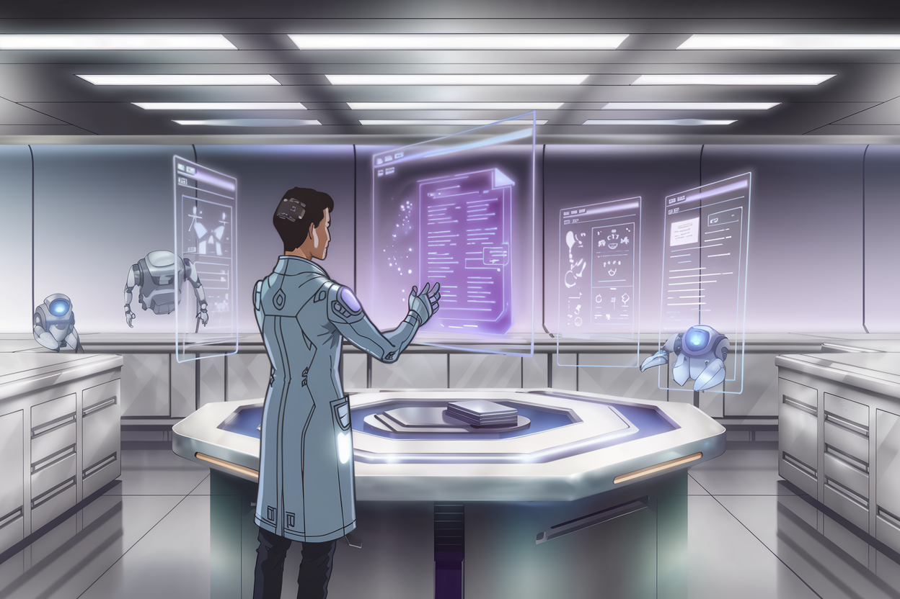
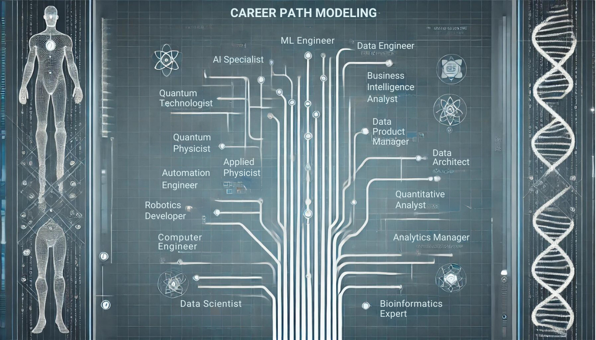
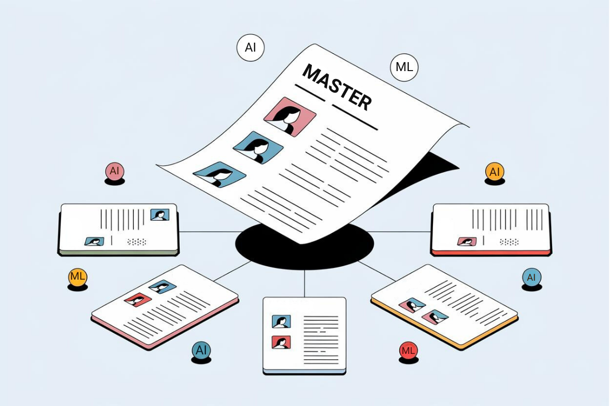
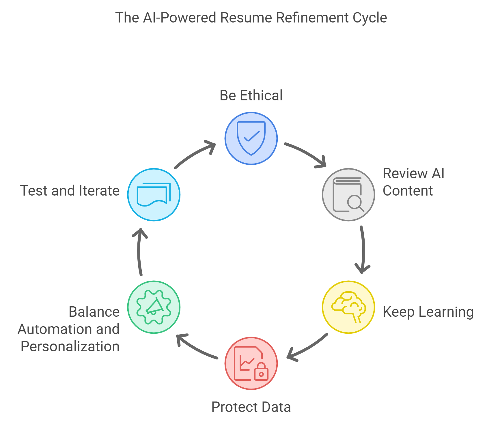

V. Advanced AI Techniques for STEM Resumes: Where Sci-Fi Meets CV
Welcome back! Strap in, because we're headed toward some seriously advanced AI techniques. We're talking cutting-edge stuff that would capture the heart of Tony Stark's J.A.R.V.I.S.

A. Using Predictive Analytics to Anticipate Hiring Trends: Your Career Crystal Ball
Who needs a time machine when you've got predictive analytics? Let's peer into the future of your industry and align your resume with the job market of tomorrow.
1. Industry Trend Analysis: The Job Market Meteorologist
Tool Spotlight: IBM Watson Discovery
The Mission: Become the Nostradamus of your industry's job market.
- Feed Watson an all-you-can-eat buffet of industry reports, job postings, and tech news.
- Analyze the output to spot the next big things in your field. You're looking for the "so hot right now" skills and technologies.
- Sprinkle these futuristic insights into your resume like magic job-getting fairy dust.
STEM-Specific Application: Imagine you're a machine learning engineer, and the AI predicts a surge in demand for explainable AI (XAI). Suddenly, that side project you did on interpretable machine learning models isn't just a hobby—it's your golden ticket! Highlight it like it's the last slice of pizza at a dev meetup.
2. Career Path Modeling: Your Professional GPS
Tool Spotlight: LinkedIn Career Explorer with AI enhancements
The Mission: Map out your career journey like you're planning an epic quest in an RPG.
- Input your career history and dream job, like creating your character in a Sims game.
- Let the AI work its magic to generate potential career paths and skill recommendations.
- Tailor your resume to emphasize skills and experiences aligned with your chosen career questline.

STEM-Specific Application: Say you're a data analyst eyeing that sexy data scientist role. The AI might reveal that machine learning projects are your bridge to the promised land. Suddenly, that weekend you spent teaching a neural network to recognize cat memes becomes a critical career stepping stone. Meow-velous!
B. Implementing Sentiment Analysis to Refine Language: Teaching Your Resume to Read the Room
Because in the world of job applications, it's not just what you say, it's how you say it. Let's give your resume some emotional intelligence.
1. Company Culture Alignment: The Corporate Chameleon
Tool Spotlight: Crystal (AI personality insights)
The Mission: Make your resume speak the company's language, even if it's in emoji.
- Analyze the company's public communications and job descriptions.
- Let the AI decode the company's personality. Are they more "Let's disrupt the industry!" or "We value our 100-year tradition"?
- Adjust your resume's tone to match. You're not changing who you are, you're just wearing the right outfit to the party.
STEM-Specific Application: Applying to a hip tech startup? Phrases like "growth-hacked the database efficiency" might be your jam. For a traditional research institution? Perhaps "Optimized database performance through innovative methodologies" is more appropriate. Same achievement, different outfit!
2. Impact Statement Optimization: The Mic Drop Moment
Tool Spotlight: Textio
The Mission: Turn your achievements into mic drop moments that make recruiters go "Wow!"
- Feed your achievement statements to the AI, like submitting your lyrics for a Grammy review.
- Let the AI analyze the emotional impact and engagement level. Is your statement a chart-topper or a one-hit wonder?
- Refine your statements until they're hitting all the right notes. We're aiming for a standing ovation here!
STEM-Specific Application: Instead of a dry "Developed a machine learning algorithm," try "Pioneered a groundbreaking machine learning algorithm that turned data chaos into profit-generating insights, leaving stakeholders slack-jawed and competitors scrambling." Now that's a mic drop!
C. Utilizing Machine Learning for Personalized Industry Insights: Your AI Career Coach
Let's put machine learning to work in making your resume the Beyoncé of your industry: a standout performer that leaves everyone else looking like amateurs.
1. Competitive Analysis: The Resume Olympics
Tool Spotlight: ResyMatch.io with advanced ML features
The Mission: Benchmark your resume against the Michael Phelps of your industry.
- Submit your resume and target job description to the AI.
- Let the AI compare you against a database of industry success stories.
- Receive personalized suggestions to turn your resume from a contestant into a champion.
STEM-Specific Application: A software engineer might discover that the rock stars in their target company often flaunt their open-source contributions. Time to dust off that GitHub profile and let your code commits shine!
2. Skills Importance Prediction: The Trend Forecaster
Tool Spotlight: TalentNeuron
The Mission: Identify the skills that'll be hotter than a freshly overclocked CPU.
- Input the job description and your location. You're setting the stage for your skills showdown.
- Let the AI predict the must-have skills for the role. It's like getting tomorrow's lottery numbers, but for your career!
- Adjust your resume to showcase the skills predicted to be the next big thing. You're not just following trends, you're riding the wave!
STEM-Specific Application: Applying for a data science role? The AI might predict that expertise in a specific cloud platform is becoming the next must-have. Time to highlight that AWS certification you got "just for fun" or speed-run through a Google Cloud course.
D. Natural Language Generation (NLG) for Dynamic Resume Customization: Your Resume, Now in 31 Flavors!
Why settle for one version of your resume when you can have a bespoke version for every job? Let's turn your CV into a shape-shifting marvel.

1. Automated Resume Versioning: The Resume Replicator
Tool Spotlight: GPT-based custom tool (Warning: Assembly Required)
The Mission: Create a resume that adapts faster than a chameleon in a disco.
- Craft a comprehensive "master" resume that includes everything but the kitchen sink. This is your resume's final form, its Mega Evolution!
- Feed the job description to your NLG tool. Watch it consume the info like Pac-Man gobbling dots.
- Let the AI generate a tailored resume version, emphasizing the most relevant bits. It's like having a mini-you that rewrites your resume for each job!
STEM-Specific Application: Imagine you're a full-stack developer equally comfortable with front-end and back-end. Applying for a UI/UX heavy role? Your NLG tool emphasizes your React projects and design skills. Backend-focused position? Suddenly, your resume is all about databases and server optimization. It's not deception, it's selective emphasis.
2. Dynamic Project Descriptions: The Context Chameleon
Tool Spotlight: AI-powered writing assistant like Writesonic
The Mission: Make your projects more adaptable than a Swiss Army knife.
- Input the bare bones of your key projects. Just the facts.
- Let the AI spin multiple versions of each project description, each highlighting different aspects. It's like getting a dozen different Instagram filters for your achievements.
- Choose the version that best fits each job application. You're not changing the truth, you're just dressing it in its best outfit for each occasion.
STEM-Specific Application: Let's say you're a research scientist with a project on climate modeling. Applying for an academic position? The AI generates a description focusing on your novel methodology and peer-reviewed outcomes. Industry role? The same project is now described in terms of its practical applications and potential for commercial weather prediction. Same project, different spotlight!
E. Computer Vision AI for Resume Layout Optimization: Making Your Resume a Feast for the Eyes
Because sometimes, it's not just about what you say, but how you lay it out. Let's make your resume so that it can hang in the Louvre.
1. Eye-Tracking Simulation: The Attention Magnet
Tool Spotlight: EyeQuant AI
The Mission: Make your resume more eye-catching than a cat video on the internet.
- Upload your resume design to the AI tool.
- Analyze the generated heat map showing predicted visual attention areas.
- Adjust your layout to ensure key info falls in the "hot zones." You're not just designing, you're conducting an orchestra for the eyes.
STEM-Specific Application: For all you UX/UI designers and data viz wizards out there, this is your time to shine! Use this tool to ensure your resume is a living example of your skills. Make that experience section pop like the call-to-action button on the world's most optimized landing page!
2. ATS-Friendly Design Optimization: The Robot Whisperer
Tool Spotlight: Jobscan's ATS-specific AI tool
The Mission: Create a resume that speaks fluent Robot while still charming human eyes.
- Feed your beautifully formatted resume to the AI tool.
- Get feedback on how well ATS systems can read your masterpiece. Are the robots swooning or confused?
- Make adjustments to please both our robot overlords and human recruiters. It's a delicate balance, like dancing the Robot with actual grace.
STEM-Specific Application: This is crucial for those complex technical resumes, especially if you're in fields like systems architecture or bioinformatics. Ensure your intricate project descriptions and multi-layered skill sets don't turn into digital alphabet soup when parsed by ATS. Your breakthrough in quantum computing should sound equally impressive to a quantum physicist and a keyword-searching algorithm!
Best Practices for Implementing Advanced AI Techniques: The Ten(ish) Commandments of AI-Powered Resume Crafting
- Thou Shalt Be Ethical: Always prioritize honesty and accuracy. Use AI to enhance your genuine qualifications, not to fabricate a sci-fi version of yourself. Remember, you're optimizing your resume, not writing the next Marvel superhero origin story.
- Thou Shalt Not Blindly Trust the Machines: While these AI techniques are powerful, always review and approve the AI-generated content. Your personal judgment is crucial. Think of yourself as the wise Jedi master guiding your young AI Padawan.
- Thou Shalt Keep Learning: Stay updated on the latest AI tools and techniques. Today's cutting-edge tool could be tomorrow's digital dinosaur.
- Thou Shalt Protect Thy Data: Be cautious about the personal data you input into AI tools. Ensure you're comfortable with the tool's data usage policies. You don't want your resume to be the start of a "data breach" movie plot.
- Thou Shalt Balance Automation and Personalization: While AI can generate much of your resume content, ensure your unique voice and experiences shine through. You're aiming for "Iron Man in the suit," not "Ultron took over my LinkedIn."
- Thou Shalt Test and Iterate: Continuously test different AI-generated versions of your resume and iterate based on the results and feedback you receive. Think of it as A/B testing for your career.

"In the brave new world of AI-powered job hunting, you're not just a candidate; you're a tech-augmented super-applicant. Use these advanced techniques wisely, and you'll be ready to hack the job market matrix!" - A friendly neighborhood AI guy
The Final Countdown: Your AI-Powered Resume Revolution
Congratulations, you brilliant STEM superstar! You've now graduated from the School of Advanced AI Resume Sorcery. Your CV has been analyzed, optimized, sentiment-adjusted, trend-predicted, and visually perfected. It's now ready to dazzle both the cold, calculating ATS algorithms and the warm, caffeinated human recruiters.
Remember, while these AI tools are like having J.A.R.V.I.S. as your personal resume assistant, they're not meant to replace your unique brilliance and experiences. Think of them as the high-tech suit that enhances your natural superpowers. You're still the hero of this story – the AI is just your really cool sidekick.
Now go forth and conquer the job market! May your inbox be filled with interview requests, your calendar bursting with exciting opportunities, and your career trajectory be as impressive as a SpaceX rocket launch. And always remember: in the ever-evolving world of tech, you're not just looking for a job – you're embarking on the next exciting chapter of your professional adventure.
So, suit up, power on, and show the world what happens when human ingenuity meets artificial intelligence. The future is yours to code, calculate, and create!
Key Takeaways: Advanced AI Techniques for STEM Resumes
- Leverage predictive analytics tools like IBM Watson Discovery to anticipate hiring trends and align your resume accordingly.
- Use AI tools for career path modeling and project descriptions to personalize your resume for specific roles.
- Employ sentiment analysis to ensure your resume’s tone aligns with company culture and highlights your impact.
Apply Advanced AI Techniques to Your Resume Today
Take your resume to the next level by using advanced AI tools like Watson Discovery for industry trend predictions or ResyMatch for competitive analysis. Tailor your project descriptions and ensure your resume aligns with emerging technologies in your field. Visit our website for personalized consultations and advanced AI tools to optimize your STEM resume.